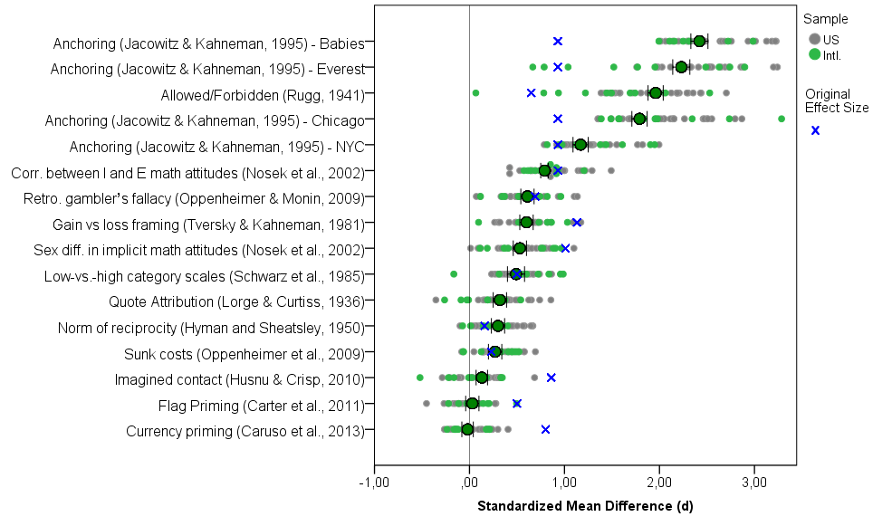
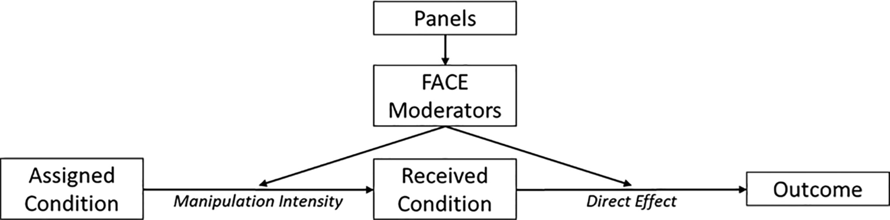
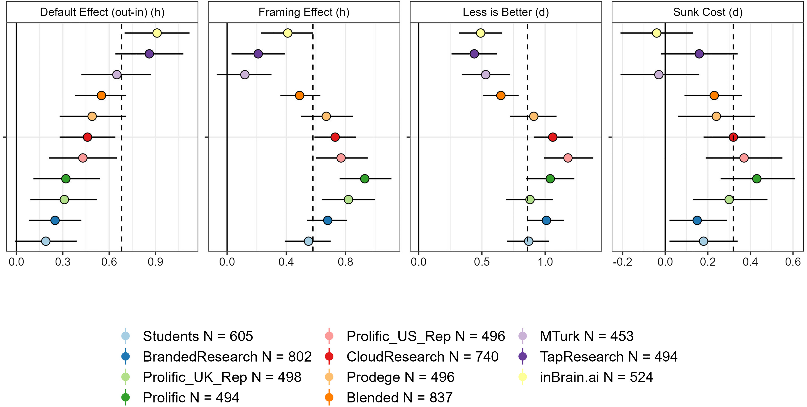
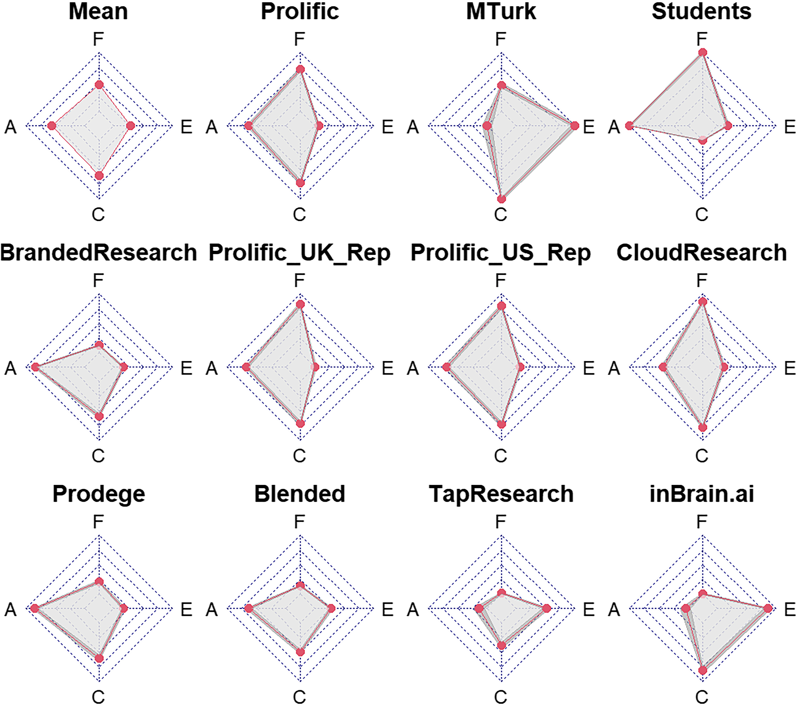
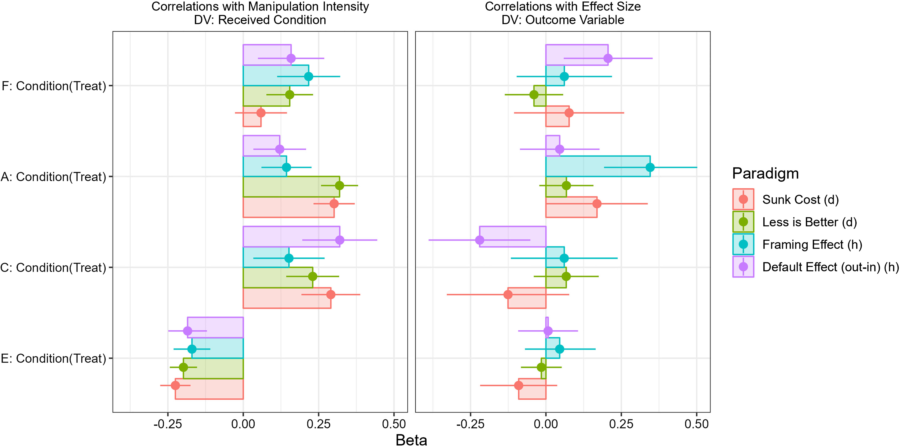
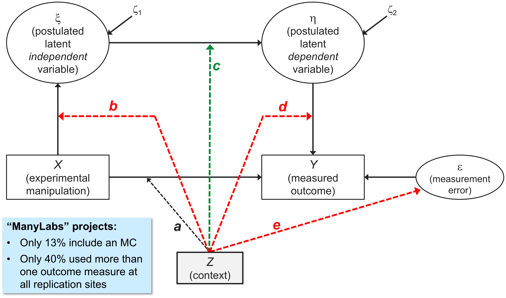
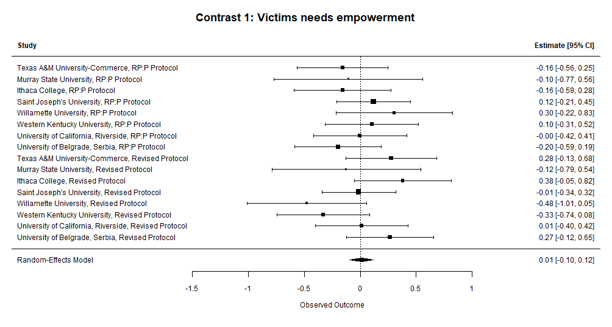
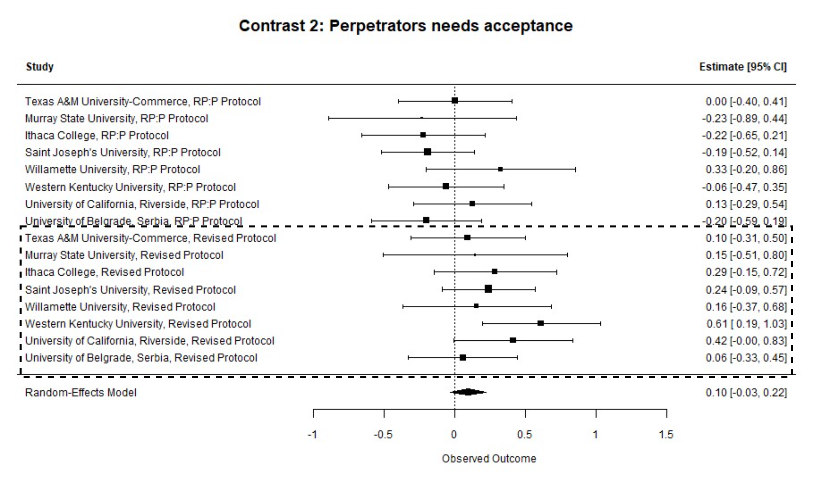
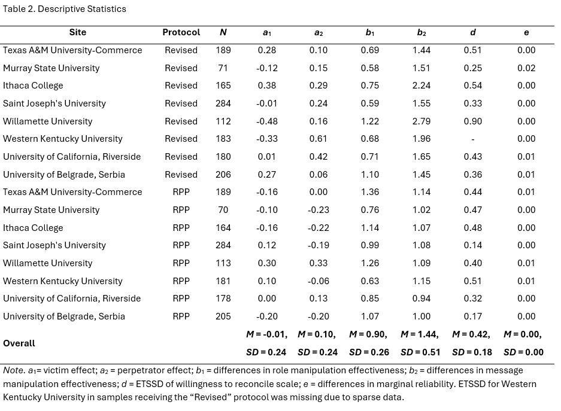
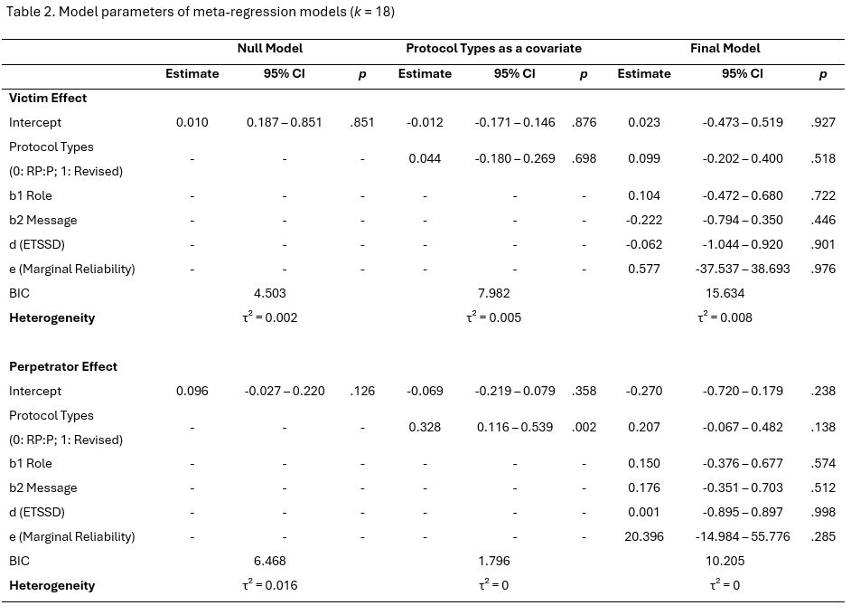

Symposium “Who Critiques the Critique? Toward a Reflexive Metascience” · EASP 2026, Strasbourg
Dr. Rizqy Amelia Zein (Center for Advanced Internet Studies & Universitas Airlangga)
Prof. Dr. Mario Gollwitzer (Ludwig-Maximilian-Universität München)
The Role of Context in Explaining Effect Size Heterogeneity in Replication Studies
AGENDA
- Replication “Crisis”
- Context Characteristics
- Testing the Role of Contextual Variation
- Conclusion & Limitations
01
Replication “Crisis”
Replication “Crisis”
A common assumption: Low replication rates are due to a flawed incentive system (“publish or perish”), lack of methodological competence, and questionable research practices:
- “Many replications, in practice, are efforts to root out invalidity due either to questionable research practices that undermine the statistical evidence or to questionable validity of the treatments, measures, and other study features used to produce the existing evidence.” (Nosek et al., 2022; p. 724).
- “The only way forth is for psychological science to take seriously the major limitations in how psychological data are handled.” (Ferguson & Heene, 2012; p. 559).
- “A major replication project found that only 25% of results in social psychology could be replicated. I examine various explanations for this low replication rate and found most of them lacking in empirical support. I then provide evidence that the use of questionable research practices accounts for this result.” (Schimmack, 2020; p. 364).
Replication “Crisis”
A common assumption: Low replication rates are due to a flawed incentive system (“publish or perish”), lack of methodological competence, and questionable research practices.
BUT if that was true, then replication rates should increase…
- by introducing changes to the incentive system (reward methodological rigor; punish p-hackers, etc.)
- as researchers’ methodological competence increases (e.g., by providing resources, teaching them how to analyze data, etc.)
- to the extent that QRPs are reduced (e.g., preregistration reduces HARKING; open data allow reproducibility checks and help identify p-hacking, etc.)
Replication “Crisis”
However…
- questionable research practices can only explain a small part of non-replicability (e.g., Ulrich & Miller, 2020; Wegener, Pek, & Fabrigar, 2024)
- many pre-registrations are of low quality (Hahn et al., 2025) and deviations from the pre-registered analysis plan is the rule (rather than the exception; see Van den Akker et al., 2024)
- more and more datasets are now publicly accessible on repositories, but only a tiny fraction of data is actually re-usable (see Crüwell et al., 2023; Hardwicke et al., 2021), which explains why data are not really re-used (see Blask et al., 2021; Tenopir et al., 2020)
- no evidence that methodological reforms have actually increased replication rates.
- idea that replication success depends on the context in which the original study and its replications have been conducted (e.g., sample characteristics, psychometric properties of manipulations and measures) has been largely dismissed…, but may still be a good one!
02
Context Characteristics
Context Characteristics: the ManyLabs 1 Example

ManyLabs 1 Project (Klein et al., 2014)
Context Characteristics
The “FACE” framework (Krefeld-Schwalb et al. (2024)): which sample characteristics moderate replication of classic effects?

- Panels: 11 samples (e.g., ad-hoc student sample; MTurkers, Prolific workers, etc.)
- FACE moderators: Fluid Intelligence (e.g., numeracy), Attentiveness, Crystallized Intelligence (e.g., knowledge, life experience), Experience with online surveys
- Effects tested: four famous effects in econ/social psych — default (opt-out/in), framing, less-is-better, sunk costs
from Krefeld-Schwalb et al. (2024)
Context Characteristics

from Krefeld-Schwalb et al. (2024)
Context Characteristics

Samples vary considerably with regard to the “FACE” parameters:
MTurkers are …
- Low in Attentiveness
- High in Crystallized Intelligence
- High in Experience
Students are …
- High in Attentiveness
- Low in Crystallized Intelligence
- Low in Experience
from Krefeld-Schwalb et al. (2024)
Context Characteristics

Each radar axis indexes one FACE moderator:
- Indicators of Fluid Intelligence
- Indicators of Attentiveness
- Indicators of Crystallized Intelligence
- Indicators of Experience
from Krefeld-Schwalb et al. (2024)
Conceptually Relevant vs. Irrelevant Context

- a → observed effect heterogeneity
- b → differences in construct validity of X between contexts
- c → conceptually relevant moderators associated w/context
- d → differences in construct validity of Y between contexts
- e → context-dependent (un)reliability
from Gollwitzer & Schwabe (2022)
03
Testing the Role of Contextual Variation
Testing the role of contextual variation
Examined the role of “conceptually relevant” and “conceptually irrelevant” contextual variables (Gollwitzer & Schwabe, 2022) by reanalyzing data from past multi-lab replications.
- We searched the FORRT Replication Database (FReD) through 17.12.2025 and reviewed ongoing Psychological Science Accelerator (PSA) projects.
- 384 effect sizes were coded across 44 multi-site replication projects.
- We applied four inclusion criteria:
- To calculate path b, a manipulation check should be used in the study.
- To estimate path d and e, the outcome variable should be measured by a multi-item self-report scale (≥ 3 items), allowing differential item functioning (DIF) analysis and marginal reliability estimation.
- Item-level data must be publicly available.
- A comparison single-lab study (the original, or a pre-registered single-site replication) must be available as the reference group for DIF analysis.
- Only one effect, Shnabel & Nadler (2008), Study 4, fulfilled all of these criteria.
Reanalysis of Shnabel & Nadler (2008), Study 4 data
Victims are more likely to reconcile if they feel empowered, while perpetrators are more likely to do so if they feel accepted.
- We decomposed the interaction effect into two contrasts: effects for victims and effects for perpetrators.
- We used RP:P data as a reference, and ML5 (k = 8, all US samples) as test data.
- To estimate the heterogeneity of victims’ and perpetrators’ effects, we performed meta-regressions, where:
- b = absolute differences of manipulation effectiveness (b1: role, b2: message)
- c = protocol type (ML5 participants were randomly assigned to either the same vignette used in the original study and RP:P — the “original” protocol — or a “modified” vignette)
- d = expected test score standardized differences (ETSSD; Meade & Wright, 2012)
- e = absolute differences of marginal reliability (ρ)
- ML5 finding: the focal interaction effect was significant only among participants who were given the modified vignette (Baranski et al., 2020).
Results: Victims effect

- Heterogeneity was low (τ² = 0.0025, I² = 5.15%).
- Conceptually-relevant (protocol types) and conceptually-irrelevant context (b, d, and e) failed to explain heterogeneity.
- Regardless of any contextual variables, we failed to detect the victims effect.
Results: Perpetrators effect

- Heterogeneity was moderate (τ² = 0.0162, I² = 25.67%).
- Only protocol type was significant and explained the entire heterogeneity in the model.
- ML5 samples using the “original” protocol yielded more heterogeneous ES, while ES from the “modified” protocol were consistently positive.
- The perpetrator effect was small and positive only among participants given the modified protocol.
Conclusion & Limitations
What effect size heterogeneity in many-labs replications can — and cannot — tell us
- Conceptually relevant context characteristics (nature of the transgression; type of relationship between victim and transgressor) explain effect heterogeneity in the effects found by Shnabel and Nadler (2008) ― these might have to be built into the theory (“Needs-Based Model”).
- The example shows: Context does matter!
- Effect heterogeneity can be informative in many-labs replication studies ― especially if the effect to be replicated is (likely) a true positive (Fünderich, Beinhauer, & Renkewitz, 2025).
- Context can be modeled in several different ways (e.g., Pohl et al., in press; PsychMethods). Replication studies can be designed to test context effects (Hoffmann et al., 2025; AMPPS).
- Our approach shows how meta-regression can be used to analyze how much heterogeneity is due to psychometric properties (i.e., conceptually irrelevant context characteristics).
- BUT: We need more test cases to find out how much they really matter.
Dr. Rizqy Amelia Zein
Center for Advanced Internet Studies (CAIS) & Universitas Airlangga
E-mail: amelia.zein@cais-research.de · Homepage: rameliaz.github.io
Prof. Dr. Mario Gollwitzer
LMU München, Department of Psychology
E-mail: mario.gollwitzer@lmu.de · Homepage: www.psy.lmu.de/soz

Thank you!
Center for Advanced Internet Studies (CAIS) gGmbH
Konrad-Zuse-Str. 2a, 44801 Bochum
info@cais-research.de
+49 234 9531 5000
www.cais-research.de
Appendix – Descriptive Statistics

Appendix – Model Parameters

Context & Effect Size Heterogeneity | Zein & Gollwitzer | EASP 2026